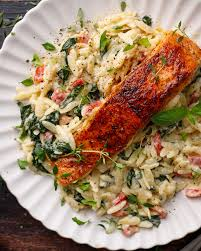

About the Site
This website is to help people who are starting out their fitness journey and find their footing. We provide beginner friendly exercises, helpful information on nutrition, and overall wellness tips based on my personal experience as well as reliable online sources that I will credit when appropriate. I myself struggled immensely with getting into it and want to provide those who are viewing a more smooth journey than I had.
I hope you find the information on this site helpful and that it motivates you to start your fitness journey. Remember, it's not about being perfect, it's about making progress. Every step you take towards a healthier lifestyle is a step in the right direction. Let's build through the burn together!
Community Highlights
Share your fitness journey with others who are part of the community. Connect with people on the same path, share updates on progress, helpful information, new workout routines, and lift each other up along the way. Join our online forums and social media groups to engage with like-minded individuals and find support and motivation.
Beginner Tips
Set small, achievable goals for yourself each week to stay motivated and on track.
Focus on consistency rather than perfection. It's better to do a little bit every day than to try to do too much at once and burn out.
Celebrate your successes, no matter how small they may seem. Every step forward is a step in the right direction.
Make sure to hydrate and practice good sleep hygiene to support your fitness goals.
Focus on technique instead on going heavy, practice makes perfect.
Don't be scared to look at guides to see if your preformance is on par.
Fuel yourelf before lifting any weight, going on low food fuel is a recipe for disaster.
Take progress photos regular to keep yourself motivated and see how far you've come.Quick Recipe(s)
Easy and healthy recipes to support your fitness journey. This section will be updated over time, so check back for new recipes!
Featured Recipe: Salmon & Orzo with Spinach and Mushrooms
Ingredients
- 1 1/4 pounds center-cut salmon, (cut into 4 portions)
- 2 teaspoons extra-virgin olive oil
- 4 cups lightly packed baby spinach
- 1 cup whole-wheat orzo
- 1 1/2 cups sliced mushrooms
- 1/8 teaspoon ground pepper plus 1/4 teaspoon divided
- 1/2 teaspoon salt, divided
- 1 teaspoon garlic powder
- 1/4 cup heavy cream
- 1 3/4 cups low-sodium chicken broth
Instructions:
- Preheat oven to 450°F.
- Combine the broth, cream, garlic powder, 1/8 teaspoon black pepper, and 1/4 teaspoon salt in a large skillet. Add the orzo and mushrooms, then cover and bring to a boil over medium-high heat.
- Once boiling, stir in the spinach, reduce heat to low, cover again, and simmer until the orzo is tender and the sauce has thickened, about 10 minutes.
- While the orzo is cooking, coat the salmon with olive oil and season with the remaining salt and pepper. Place the salmon on a baking sheet and roast in the oven for about 10 minutes, or until cooked through.
- Serve the salmon over the orzo and enjoy!
Nutritional Information:
470 calories, 20g fat, 38g carbs, and 38g protein.
Recipe adapted from EatingWell.